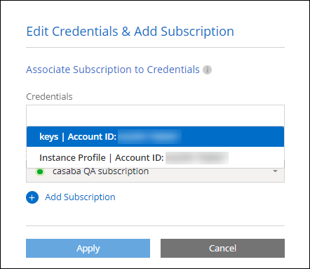

Solicitar cambios en el documento
Solicitar cambios en el documento Editar en GitHub
Editar en GitHub Guía del colaborador
Guía del colaboradorGestione las credenciales y suscripciones de AWS para BlueXP
Colaboradores
Añada y gestione credenciales de AWS para que BlueXP tenga los permisos que necesita para implementar y gestionar recursos cloud en sus cuentas de AWS. Si administra varias suscripciones de AWS, puede asignar cada una de ellas a diferentes credenciales de AWS desde la página Credentials.
Descripción general
Puede añadir credenciales de AWS a un conector existente o directamente a BlueXP:
-
Agregue credenciales de AWS adicionales a un conector existente
Añadir credenciales de AWS a un conector existente proporciona los permisos necesarios para gestionar recursos y procesos dentro de su entorno de cloud público. Aprenda a añadir credenciales de AWS a un conector.
-
Añada las credenciales de AWS a BlueXP para crear un conector
La adición de nuevas credenciales de AWS a BlueXP proporciona a BlueXP los permisos necesarios para crear un conector. Aprenda a añadir credenciales de AWS a BlueXP.
-
Añada credenciales de AWS a BlueXP para FSX para ONTAP
La adición de nuevas credenciales de AWS a BlueXP proporciona a BlueXP los permisos necesarios para crear y gestionar FSX para ONTAP. "Aprenda a configurar permisos para FSX para ONTAP"
Cómo rotar credenciales
BlueXP le permite proporcionar credenciales de AWS de varias maneras: Una función IAM asociada a la instancia de Connector, asumiendo un rol IAM en una cuenta de confianza o proporcionando claves de acceso de AWS. "Obtenga más información acerca de las credenciales y permisos de AWS".
Con las dos primeras opciones, BlueXP utiliza el Servicio de token de seguridad de AWS para obtener credenciales temporales que giran constantemente. Este proceso es la mejor práctica porque es automático y seguro.
Si proporciona a BlueXP claves de acceso de AWS, debe rotar las claves actualizándolas en BlueXP a intervalos regulares. Este es un proceso completamente manual.
Agregar credenciales a un conector
Añada las credenciales de AWS a un conector para que tenga los permisos necesarios para gestionar los recursos y procesos en su entorno de cloud público. Puede proporcionar el ARN de un rol IAM en otra cuenta o proporcionar claves de acceso de AWS.
Conceder permisos
Antes de agregar credenciales de AWS a un conector, debe proporcionar los permisos necesarios. Los permisos permiten a BlueXP administrar recursos y procesos dentro de esa cuenta de AWS. La forma en que proporcione los permisos depende de si desea proporcionar BlueXP con el ARN de una función en una cuenta de confianza o claves de AWS.

|
Si implementó un conector desde BlueXP, BlueXP agregó automáticamente credenciales de AWS para la cuenta en la que implementó el conector. Esta cuenta inicial no se agrega si implementó el conector desde AWS Marketplace o si instaló manualmente el software Connector en un sistema existente. "Obtenga más información acerca de los permisos y credenciales de AWS". |
opciones
Conceda permisos asumiendo una función IAM en otra cuenta
Puede configurar una relación de confianza entre la cuenta AWS de origen en la que ha implementado la instancia de Connector y otras cuentas de AWS mediante los roles IAM. A continuación, debe proporcionar a BlueXP el ARN de las funciones de IAM de las cuentas de confianza.
Si el conector está instalado en las instalaciones, no puede utilizar este método de autenticación. Debe usar claves AWS.
-
Vaya a la consola IAM de la cuenta de destino en la que desea proporcionar permisos al conector.
-
En Access Management, haga clic en roles > Crear función y siga los pasos para crear la función.
No olvide hacer lo siguiente:
-
En Tipo de entidad de confianza, seleccione cuenta de AWS.
-
Seleccione otra cuenta de AWS e introduzca el ID de la cuenta en la que reside la instancia de Connector.
-
Cree las directivas necesarias copiando y pegando el contenido de "Políticas de IAM para el conector".
-
-
Copie el rol ARN del rol IAM para que pueda pegarlo en BlueXP más adelante.
La cuenta ahora tiene los permisos necesarios. Ahora puede agregar las credenciales a un conector.
Conceda permisos proporcionando claves AWS
Si desea proporcionar BlueXP con claves AWS para un usuario de IAM, debe conceder los permisos necesarios a ese usuario. La política IAM de BlueXP define las acciones y los recursos de AWS que BlueXP puede utilizar.
Debe utilizar este método de autenticación si el conector está instalado en las instalaciones. No se puede utilizar la función IAM.
-
Desde la consola IAM, cree directivas copiando y pegando el contenido de "Políticas de IAM para el conector".
-
Asocie las políticas a un rol de IAM o a un usuario de IAM.
La cuenta ahora tiene los permisos necesarios. Ahora puede agregar las credenciales a un conector.
Añada las credenciales
Después de proporcionar una cuenta de AWS con los permisos necesarios, puede agregar las credenciales de esa cuenta a un conector existente. Esto permite iniciar sistemas Cloud Volumes ONTAP en esa cuenta con el mismo conector.
Si acaba de crear estas credenciales en su proveedor de cloud, es posible que transcurran unos minutos hasta que estén disponibles para su uso. Espere unos minutos antes de agregar las credenciales a BlueXP.
-
Asegúrese de que el conector correcto está seleccionado actualmente en BlueXP.
-
En la parte superior derecha de la consola de BlueXP, haga clic en el icono Configuración y seleccione credenciales.

-
Haga clic en Agregar credenciales y siga los pasos del asistente.
-
Ubicación de credenciales: Seleccione Servicios Web de Amazon > conector.
-
Definir credenciales: Proporcione el ARN (nombre de recurso de Amazon) de una función de IAM de confianza, o introduzca una clave de acceso de AWS y una clave secreta.
-
Suscripción al mercado: Asocie una suscripción al mercado con estas credenciales suscribiendo ahora o seleccionando una suscripción existente.
Para pagar por Cloud Volumes ONTAP a una tarifa por hora (PAYGO) o con un contrato anual, las credenciales de AWS deben estar asociadas con una suscripción a Cloud Volumes ONTAP desde AWS Marketplace.
-
Revisión: Confirme los detalles acerca de las nuevas credenciales y haga clic en Agregar.
-
Ahora puede cambiar a un conjunto de credenciales diferente de la página Details y Credentials al crear un nuevo entorno de trabajo:

Agregar credenciales a BlueXP para crear un conector
Agregue las credenciales de AWS a BlueXP proporcionando el ARN de una función IAM que proporciona a BlueXP los permisos necesarios para crear un conector. Puede elegir estas credenciales al crear un conector nuevo.
Configure el rol IAM
Configure una función de IAM que permita al SaaS BlueXP asumir la función.
-
Vaya a la consola IAM de la cuenta de destino.
-
En Access Management, haga clic en roles > Crear función y siga los pasos para crear la función.
No olvide hacer lo siguiente:
-
En Tipo de entidad de confianza, seleccione cuenta de AWS.
-
Seleccione otra cuenta de AWS e introduzca el ID del SaaS BlueXP: 952013314444
-
Cree una directiva que incluya los permisos necesarios para crear un conector.
-
-
Copie el rol ARN de la función IAM para que pueda pegarlo en BlueXP en el siguiente paso.
El rol IAM ahora tiene los permisos necesarios. Ahora puede agregarla a BlueXP.
Añada las credenciales
Después de proporcionar la función IAM con los permisos necesarios, agregue el rol ARN a BlueXP.
Si acaba de crear la función IAM, puede tardar unos minutos en estar disponible. Espere unos minutos antes de agregar las credenciales a BlueXP.
-
En la parte superior derecha de la consola de BlueXP, haga clic en el icono Configuración y seleccione credenciales.
-
Haga clic en Agregar credenciales y siga los pasos del asistente.
-
Ubicación de credenciales: Seleccione Servicios Web de Amazon > BlueXP.
-
Definir credenciales: Proporcionar el ARN (nombre de recurso de Amazon) de la función IAM.
-
Revisión: Confirme los detalles acerca de las nuevas credenciales y haga clic en Agregar.
-
Ahora puede utilizar las credenciales al crear un conector nuevo.
Asocie una suscripción a AWS
Después de añadir sus credenciales de AWS a BlueXP, puede asociar una suscripción a AWS Marketplace con estas credenciales. La suscripción le permite pagar por Cloud Volumes ONTAP a una tarifa por hora (PAYGO) o utilizar un contrato anual, y utilizar otros servicios cloud de NetApp.
Hay dos escenarios en los que puede asociar una suscripción a AWS Marketplace después de haber añadido las credenciales a BlueXP:
-
No asoció una suscripción cuando agregó inicialmente las credenciales a BlueXP.
-
Desea sustituir una suscripción existente de AWS Marketplace por una nueva suscripción.
Debe crear un conector para poder cambiar la configuración de BlueXP. "Aprenda a crear un conector".
-
En la parte superior derecha de la consola de BlueXP, haga clic en el icono Configuración y seleccione credenciales.
-
Haga clic en el menú de acción para obtener un conjunto de credenciales y, a continuación, seleccione Suscripción asociada.

-
Para asociar las credenciales a una suscripción existente, seleccione la suscripción en la lista desplegable y haga clic en asociado.
-
Para asociar las credenciales con una nueva suscripción, haga clic en Agregar suscripción > continuar y siga los pasos del AWS Marketplace:
-
Haga clic en Ver opciones de compra.
-
Haga clic en Suscribirse.
-
Haga clic en Configurar su cuenta.
Se le redirigirá al sitio web de BlueXP.
-
Desde la página asignación de suscripción:
-
Seleccione las cuentas de NetApp a las que desea asociar esta suscripción.
-
En el campo sustituir suscripción existente, elija si desea sustituir automáticamente la suscripción existente para una cuenta con esta nueva suscripción.
BlueXP reemplaza la suscripción existente para todas las credenciales de la cuenta con esta nueva suscripción. Si alguna vez no se ha asociado un conjunto de credenciales a una suscripción, esta nueva suscripción no se asociará a dichas credenciales.
Para el resto de cuentas, deberá asociar manualmente la suscripción repitiendo estos pasos.
-
Haga clic en Guardar.
En el siguiente vídeo se muestran los pasos para suscribirse desde Google Cloud Marketplace:
-
-
Editar credenciales
Edite sus credenciales de AWS en BlueXP cambiando el tipo de cuenta (las claves de AWS o asumen la función), editando el nombre o actualizando las credenciales (las claves o el rol ARN).

|
No se pueden editar las credenciales de un perfil de instancia asociado a una instancia de conector. |
-
En la parte superior derecha de la consola de BlueXP, haga clic en el icono Configuración y seleccione credenciales.
-
Haga clic en el menú de acción para obtener un conjunto de credenciales y, a continuación, seleccione Editar credenciales.
-
Realice los cambios necesarios y, a continuación, haga clic en aplicar.
Eliminación de credenciales
Si ya no necesita un conjunto de credenciales, puede eliminarlas de BlueXP. Sólo puede eliminar credenciales que no estén asociadas a un entorno de trabajo.
|
|
No se pueden eliminar las credenciales de un perfil de instancia asociado a una instancia de conector. |
-
En la parte superior derecha de la consola de BlueXP, haga clic en el icono Configuración y seleccione credenciales.
-
Haga clic en el menú de acción para obtener un conjunto de credenciales y, a continuación, seleccione Eliminar credenciales.
-
Haga clic en Eliminar para confirmar.